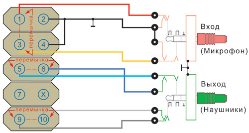
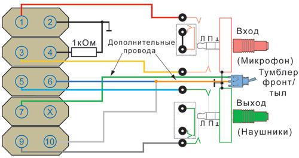

Душа инженеров главной процессорной компании болит и за адептов фронтальных аудиогнезд с 1997 года. Тогда интеловцы не только придумали систему стандартов AC’97, которая наказывала иметь аудиохост-контроллер в чипсете и АЦП / ЦАП на материнской плате, но и подробно рассказали, как правильно подключать аудиогнезда. То, что изображено на Рисунке 1, – репродукция из datasheet, упрощенная в части всяких помехо-, шумо-, трескоподавляющих конденсаторов и катушек.
Но не стреляйте в художника, ведь рационализатором выступил не я, а многочисленные азиатские фабрики, посчитавшие данные детали излишними. Главная фишка этой схемы – аудиогнезда с парой замкнутых в нормальном состоянии контактов. Если переднюю панель не тревожить, то мы видим, что микрофонные входы (штыри 1 и 3) надежно закорочены «на землю», чтобы не фонило почем зря, а любимая мелодия для флейты, поступая с ЦАП кодека на 5-й и 9-й контакты (правый и левый каналы соответственно), не задерживаясь, проходит на 6-ю и 10-ю ножки разъема и направляется далее по матплате в сторону колонок.
Стоит воткнуть штекер наушников, картина меняется. Штырь «джека» давит на контакты (черный пунктир на картинке), они размыкаются, и пара «шестой / десятый» отключается от кодека. Колонки умолкают, наушники звучат – что и требовалось. Если же к «гребенке» АС’97-Audio ничего не подключается, выводы 5 и 6, 9 и 10 замыкаются попарно двумя джамперами.
Иногда можно видеть, как на разъеме, которым оканчивается жгут с передней панели, уже установлены перемычки. Я их пометил на рисунке красным пунктиром. Это значит, что производитель сэкономил несколько центов и поставил аудиогнезда без средств коммутации, то есть звук будет одновременно идти и в колонки, и в подключенные спереди наушники. В результате я уже слышу гул воинственно настроенных соседей, собирающихся на погромы, и поспешно убавляю громкость.
Ввиду того, что AC’97 давно стал достоянием истории, конкретного способа, как автоматически коммутировать фронтальные и тыловые разъемы, приводить не буду, но парой идей поделюсь. Первая – реле, расположенное рядом с колодкой, двумя парами контактов которого нужно разрывать связь между штырьками 5 / 6 и 9 / 10 «гребенки». Вторая – выкинуть всю низкосортную требуху из корпуса и привести соединения к схеме из Рисунка 1. Данный путь правильнее.

Необходимость улучшения качества звучания и потребность в многоканальных аудиосистемах привели к появлению в 2004 году нового пакета спецификаций – Intel High Definition Audio, также называемых Azalia, Intel HDA или HD Audio. Качество улучшилось, но и в интерфейсную часть стандарта были внесены значительные коррективы. Такие, что, вставив шнур передней панели с розеткой, подписанной «AC’97», в матплату с Intel HD Audio-кодеком, никакого звука с передней панели получить невозможно. «Гребенки», что характерно, совершенно одинаковы по конструкции, и даже вывод «ключа» все тот же, 8-й. В эту лужу садятся как раз те, кто размещает новые комплектующие в старых корпусах.
Давайте взглянем на Рисунок 2. Я его не стал перегружать клипартами ножниц, пунктирами – это уже адаптированная мной (и не только мной, все datasheet лежат в открытом доступе) схема подключения гнезд передней панели к современной матплате. Как видите, 7-й штырь наконец перестал филонить. Но главное отличие не в этом, а в тех автоматических контактах, которые при всовывании «джека» в AC’97 размыкались. В HDA все с точностью до наоборот. Здесь применены изолированные, нормально разомкнутые датчики.
Работает это все так. Для начала микросхема кодека должна «догадаться», что к «гребенке» материнки что-то подоткнули. Этому служит контакт #4: если он подтянут к «земле» (про резистор чуть ниже), значит, у юзера есть красивый корпус с передней панелью и он хочет всей этой машинерией пользоваться.
На логику переключения «фронт / тыл» отведено еще три контакта: пресловутая «семерка», 6 и 10-й. Замыкая между собой 6-й и 7-й выводы, сообщаем чипу о подключении микрофона, «закрытые» 7-й и 10-й говорят ему, что барин достал-таки с полки наушники. Если закоротить сразу все три контакта, акустика будет отключена, а фронтальные гнезда активны, причем оба. Аналоговые цепи не претерпели изменений.
Чтобы подключить AC’97-амуницию к модерновой плате, понадобятся час-два времени, микротумблер, любой резистор 1 кОм и обязательный набор инструментов и приспособлений: паяльник, термоусадка, пара цветных проводов достаточной длины. Переключатель «фронт / тыл» можно поставить любого типа, мне милее тумблер: по положению его ручки сразу видно, куда уходит звук. Самое удобное место для размещения «стрелочника» – неиспользуемая 3,5-дюймовая панелька над аудиогнездами.
На цвета проводков, которые я привел на схеме, советую не обращать внимания, единого стандарта нет. От передней панели отделяем провода, соединенные с 6-м и 10-м штырями колодки матплаты (у меня – серый и фиолетовый согласно Рисунку 1). Скручиваем их, спаиваем, изолируем стык и удлиняем до тумблера (оранжевый провод на схеме). Второй вывод этого выключателя протягиваем к выводу #7 колодки матплаты (зеленый провод на Рисунке 2).

Резистор 1 кОм подпаиваем в любом месте, удобно разместить маленький SMD-элемент (маркировка на «спинке» – 102) прямо на печатных дорожках рядом с гнездами, сковырнув с них лак и облудив. Все несанкционированные соединения ликвидируем ножом или фрезой. Если все провода были припаяны в нужные места, то при переключении тумблера в сторону «наушников» Windows 7 сообщит, что «был подключен разъем». Работу микрофона и наушников одновременно удобно проверять в Skype. Если все в порядке, то, как говорится, дерните тумблер и… enjoy! UP